Meridius: squad system
Status, 20 October 2026: every unit now fights as a squad of six soldiers (Moss Trolls: three) that moves, turns and attacks as one unit, with one shared health pool, soldiers falling at each share, and damage that shrinks with every loss. It plays end to end through the real UI. 40 automated tests pass. The user has not accepted the result yet.
What changed
- Squads. Six soldiers per squad unless a unit type overrides it; Moss Trolls come in threes. Stats are per soldier; a squad's HP is soldiers × HP per soldier (six footmen at 32 = 192).
- Shared health, real casualties. One bar cut into one segment per soldier. Every share lost kills a soldier, and one heavy blow can kill several. Healing never brings back the dead.
- Damage scales with the living. Squad damage = soldiers standing × damage per soldier, with armour taken off each soldier's blow. Hit chance, flanks, height, cover, charge and stances are unchanged. The rules roll damage once per attack; the animation only shows it.
- Formations. Two ranks of three, closing to 3+2, 2×2, 2+1, a pair and one man; trolls in a triangle; the warlord front and centre among his guard. Ranks follow the reference sheets and stay inside their tile.
- One unit, many bodies. One anchor, path and facing per squad; every soldier keeps his place, turns at corners, dresses ranks on arrival, swings in a ripple from the front rank, looses his own bolt in a volley, flinches, falls where he stood and stays on the field while the survivors close up.
- New units. Orc Brutes and Moss Trolls (regenerating, but a fallen troll stays down) in new encounters; Border Collie Royal Guards as elite recruits from a level-2 Barracks.
- Campaign. Squads carry their strength between battles. Field triage after a battle finds some of the fallen alive (the old survival roll, per soldier). The Barracks sells reinforcements; old saves are converted on load.
In battle
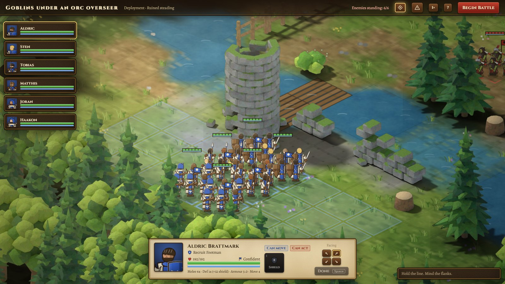
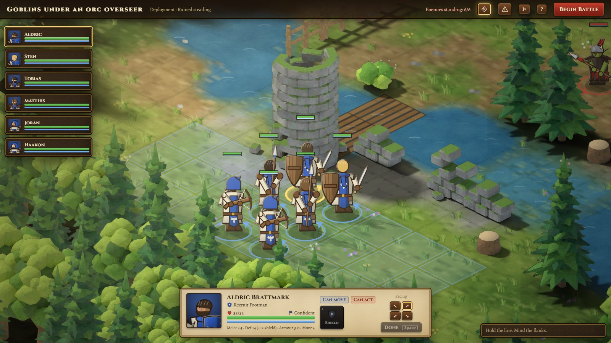
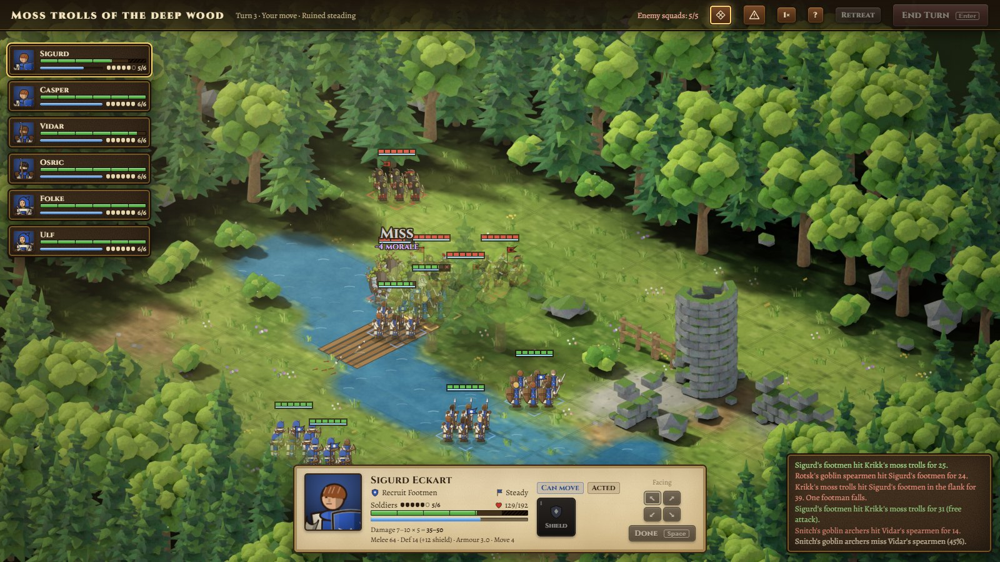
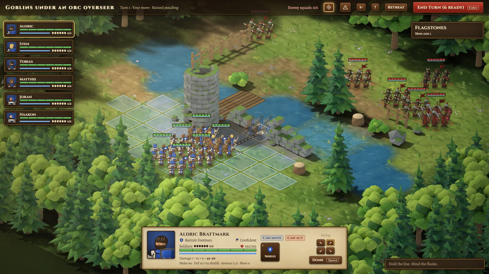
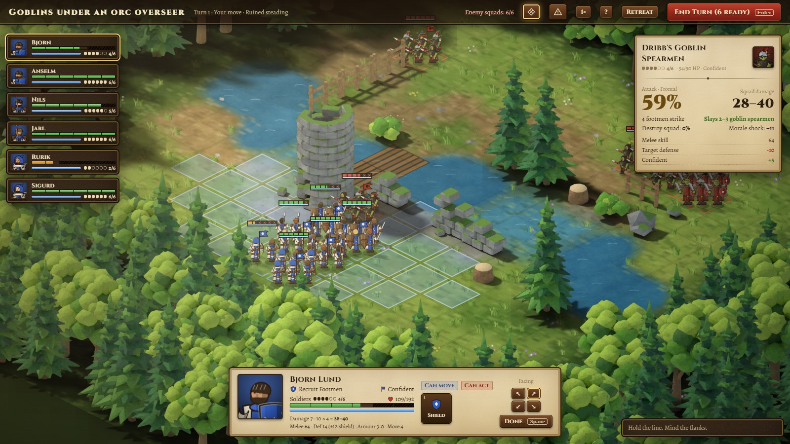
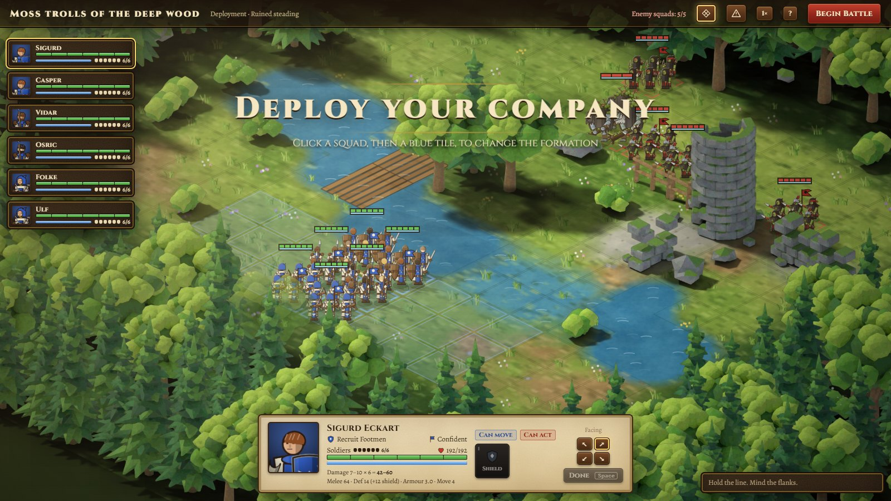
Formations at every strength
Rows face, from top: lower right, lower left, upper left, upper right. Strength falls from six to one, left to right.
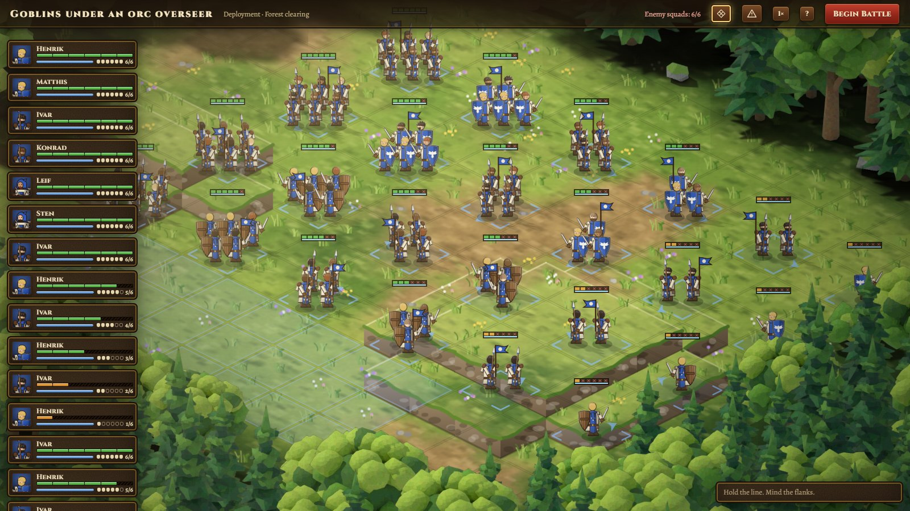
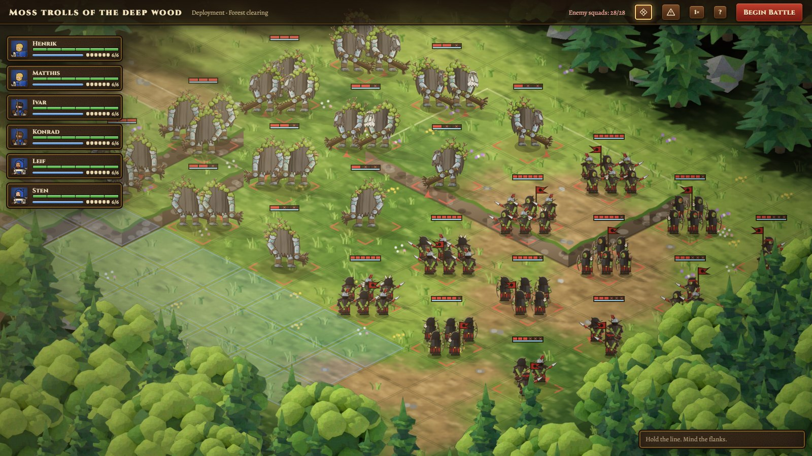
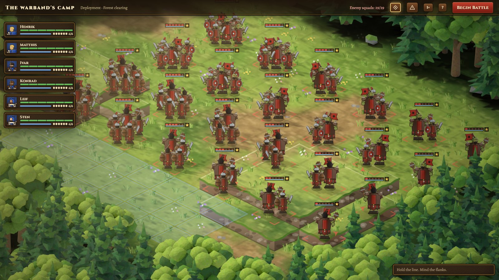
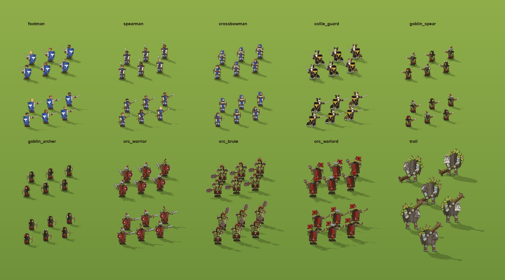
Combat frames
Staged in the real renderer (scripts/combatlab.mjs), 0.4× speed, read left to right, top to bottom.
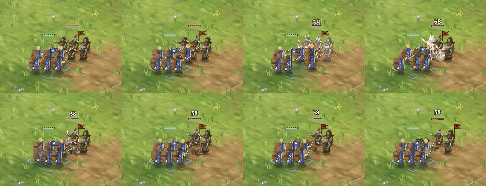
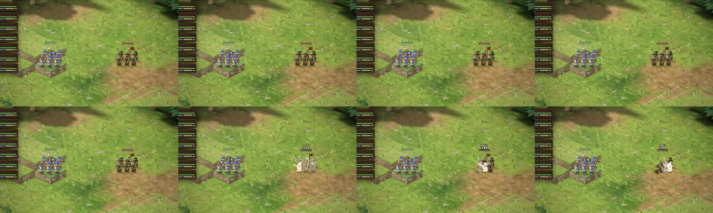
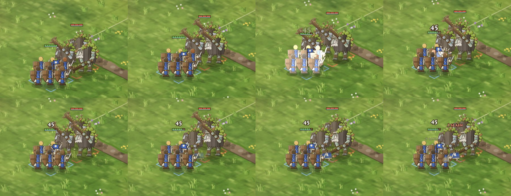
Roster, Barracks and reports
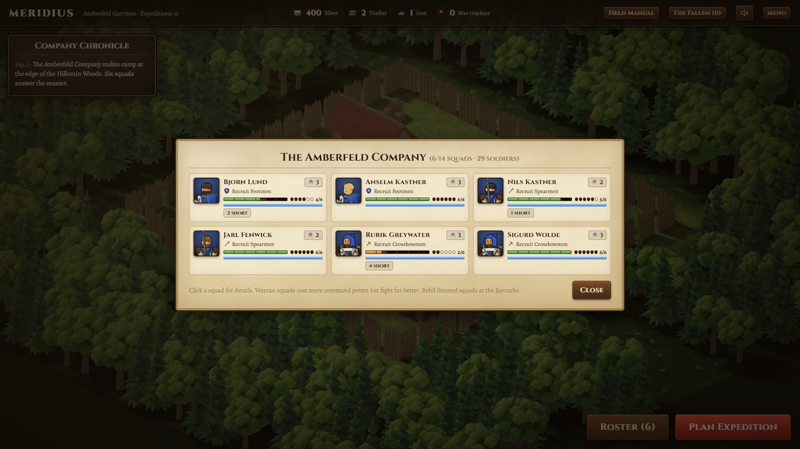
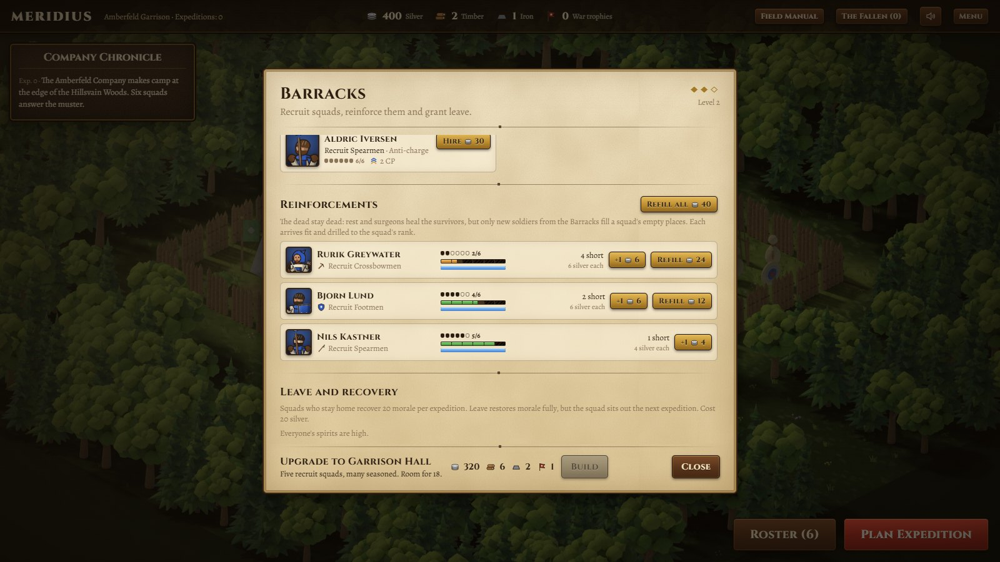
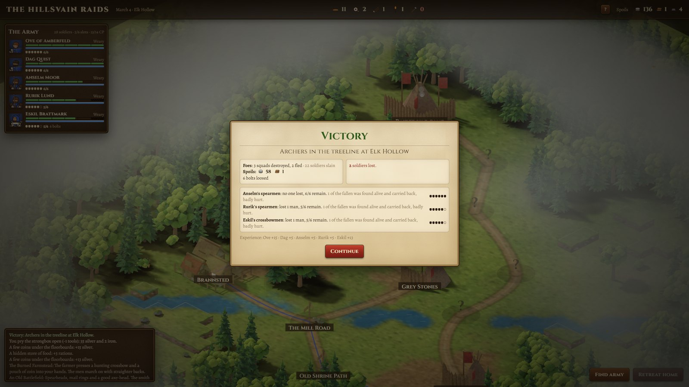
Balance
Single battles at full strength (npm run sim, 200 each) stayed close to the old numbers. Over whole campaigns (scripts/simcampaign.ts, 60 companies × 6 expeditions, automated player) expeditions are harder, mostly because a thinned squad hits softer, which is the rule asked for.
| Run | Before squads | With squads |
|---|---|---|
| Warband camp, level 1 | 78% win | 82% win (one goblin squad fewer at most) |
| Goblins under an orc overseer | 96% win | 92% win |
| Orc brutes / Moss trolls (new) | – | 100% / 97% win |
| Campaign success per expedition | 59–79% | 49–68% |
Checks run
npx tsc --noEmitclean;npx vitest run40/40, including thresholds (60 HP, 10 each → 6…1), multi-kills, no resurrection, damage ×1…×6, one damage roll per attack, troll regeneration, formation geometry and campaign copy-back.- Two full expeditions through the UI (
scripts/expedition.mjs): no console errors, no failed requests. Mouse selection, move and enemy hover checked with real input events. - About 50 fps in a headless browser without a GPU during a 12-squad battle.
Known limits
- Soldiers are still the drawn placeholder figures; there are no walk cycles, so marching is a bob and lean. The troll's face reads poorly at squad size.
- Dense melee stacks several health bars close together.
- Campaign difficulty is about ten points higher than before; levers are the triage odds, reinforcement price and encounter weights.
Specification: projects/meridius/docs/squads.md.